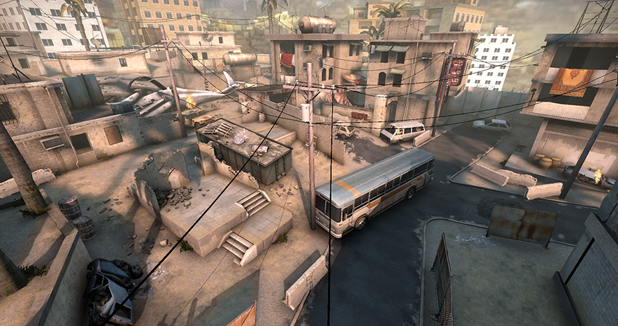

Other maps in opperation Bloodhound
Crashsite
Crashsite (gd_crashsite) is a guardian map released as part of the June 3, 2015 update in Counter-Strike: Global Offensive. Crashsite is a guardian map for Global Offensive in which the player, as a counter-terrorist, must defend against attacking terrorists in a setting similar to the dust maps. The default objective is to kill 50 enemy bots with any weapon and defend the bomb site located at CT spawn. The map doesn't include a buyzone and requires CT players to pick up dropped weapons from enemy bots. On the October 13, 2016 Update, the map was removed from the game files, making Crashsite inaccessible via console.